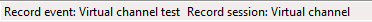

Until you have only three, four or five data files it is fairly easy to remember and identify what those file are. Imagine now that you have fifty of those data files! It becomes a kind of tricky to figure out what file is the file corresponding to the test you are looking for, especially if you are looking for an old record.
To assist you with file archiving and make data files research a way easier, CANStream uses the ‘Event\Session’ structure for data storage.
With such structure, data files are not stored in a unique folder. A folder is created for each event and sub-folders are created for every session. Then data files are placed into their respective session folder.
Term ‘event’ should be considered as a major group. Let’s say ‘CANStream documentation’. Inside this event we have multiple ‘sessions’ each of them corresponding to a specific topic. Let’s say that we have three sessions ‘Manual mode’, ‘Cycle mode’ and ‘Virtual channel’.
Thanks to this structure, we know that all data of the ‘CANStream documentation’ folder are data that have been generated for the documentation. Then, session folders indicate for what exact part of the documentation, data files have been recorded.
On the top of that, for every session of every event, CANStream creates an XML file containing information about the session or event. An event/session XML file contains the name of the event or session, its date and description and optionally a bunch of user information. This list of user information can be anything the final user has found useful to identify and track data files. In our example (CANStream documentation) we can set the CANStream release name and the name of the CAN configuration that have been used. Number and content of user information is actually unlimited so you can have how many you want and write whatever you want.
Name of both current recording event and current session is shown in the main form status bar.

Created with the Personal Edition of HelpNDoc: Easy EPub and documentation editor